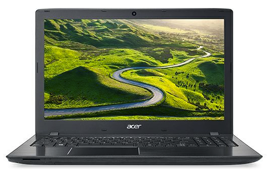

Opis: Popis 5 omiljenih prozvoda počet ću sa laptopom Acer Aspire E5-774G-55LD.
On nije u mojem vlasništvu, još, ali nudi odlične karakteristike za cijenu od cca 5100kn.
Naime, dolazi sa najnovijom genaracijom, sedmoj po redu, intel i5 procesora (i5 7200U),
također ima 8GB RAM-a, 1TB čvrstog diska. Osim tih "osnovnih" stvari koje i možemo očekivati
za laptop s tom cijenom, ovaj model dolazi sa Nvidia GeForce GTX 950MX gračikom karticom koja
je vrlo respektabilna te, ono što još posebno veseli svakog "gejmera", laptop ima 17,3" FullHD
ekran, tako da doživljaj igranja bude potpun.

Acer Aspire E5-774G-55LD
2. proizvod
Naslov: Mobitel
Opis: Sljedeći proizvod je također iz područja tehnike. Radi se o mobitelu Motorola Moto G4,
koji nudi sve što je potrebno za prosječnog (a i za zahtjevnije) korisnika uz povoljnu cijenu.
Za cijenu od cca 1500kn dobivamo: 5,5" FullHD ekran s Gorilla Glass 3 zaštitom, Snapdragon 617
čip s 8-jezgrenim procesorom, Adreno 405 grafičku karticu, 16 ili 32 GB interne memorije i 2GB
RAM-a. Također ima pristojnu stražnju kameru od 13MP i prednju od 5MP te bateriju od 3000mAh
što uz, praktički, stock Android 6.0.1 (nadogradiv na 7.0) znači da se možemo koristiti mobitelom
cijeli dan bez da nam se isprazni.
Moto G4
3. proizvod
Naslov: SSD
Opis: Još malo tehnike koje nikad dosta. Ovaj puta riječ je o Solid State Disku (SSD)
bez kojih današnji život na laptopu i/ili PC-u postaje nezamisliv (barem za mene). Kad
se jednom proba tako nešto, teško se kasnije može bez njega, jer ubrza naše računalo
maksimalno. Ovdje sam stavio primjer Samsungovog SSD EVO 850 Basic diska iz razloga što
i sam posjedujem Samsungov SSD i pokazao se kao vrlo pouzdan i naravno brz. On ima brzinu
čitanja od 540, a pisanja od 520 MB/s, što je najmanje 10 puta brže od brzina običnog HDD-a
tako da svakome preporučujem da u svoj laptop/PC ugradi SSD (nebitno za koji točno se odlučite,
jer svi su oni puuno brži od običnih HDD-a) i počne uživati u brzini.
Samsung 850 EVO Basic
4. proizvod
Naslov: Proteini
Opis: Da se pomaknemo malo s tehnike i skočimo na zdravu prehranu. Danas postoji jako puno
teorija što jesti, koliko, u kojim vremenskim razmacima i slično. Ali polako se počinje
prihvačati prijedlog koji kaže da se treba jesti dnevno više obroka (5-6), umjesto klasičnih
3 i da bi svi oni trebali biti proteinski dosta bogati (pogotovo to vrijedi za sportaše/aktivne osobe.
Budući da je ovo naše doba vrlo brzo, teško je uvijek paziti da se pojede više obroka dnevno, a kamoli
još da budu proteinski bogati. Na sreću postoje dodaci prehrani (suplementi) pomoću kojih je to lakše
ostvariti, a jedan od njih je Amino Whey. To nije ništa drugo nego protein sirutke (mlijeka) koja je
posušena i spremljena u obliku praha. Ovaj konkretni protein je vrlo kvalitetan (sadrži 86% proteina)
te pomaže u oporavku, ali i u izgradnji mišića te ga preporučujem svim aktivnim ljudima.
Amino Whey
5. proizvod
Naslov: Milka
Opis: Kao što se i kaže, šećer na kraju, tako sam i ja ostavio najslađi proizvod za kraj.
Naravno radi se o svima dobro poznatoj, i finoj, čokoladi Milka. Nije posebno ništa puno
tu objašnjavati, samo treba pronaći okus koji vam se trenutno najviše sviđa i to je to.
Kao i vjerujem većini ljudi, teško se odlučiti za jedan, najbolji okus, ali evo izdvojio
bih Noisette, vjerojatno zato jer je jedna od najslađih Milki. Naravno ne treba pretjerivati,
ali ako se ne možete zaustaviti dok jednom krenete, onda je najbolje opcija da se kupi mala
(80g) Milka, pa će te unijeti manje kalorija ako i pojedete cijelu, nego da to isto napravite
sa onom od 300g.